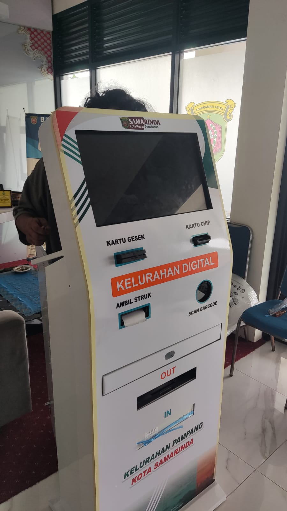
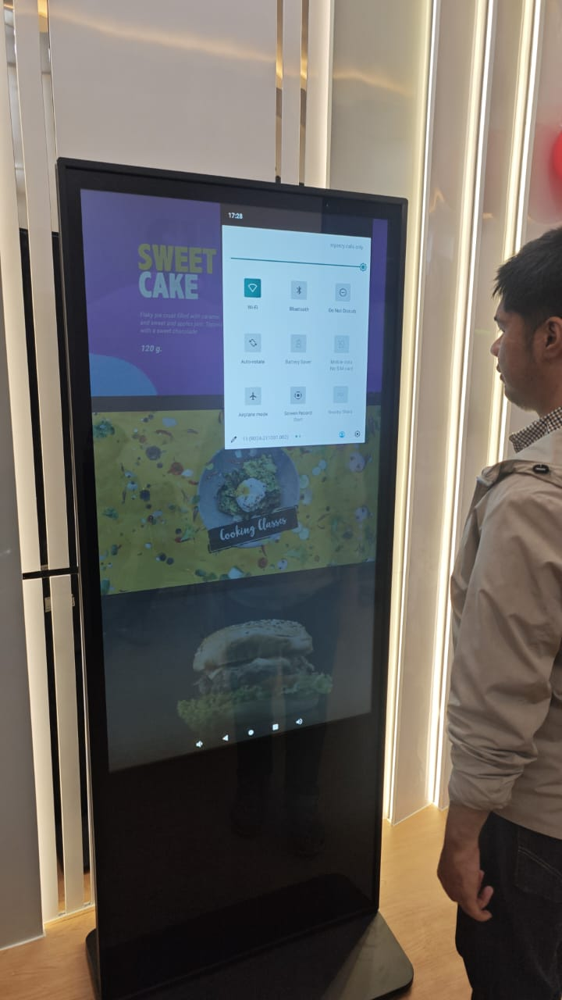
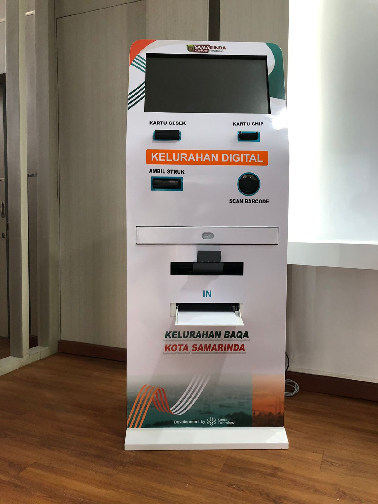
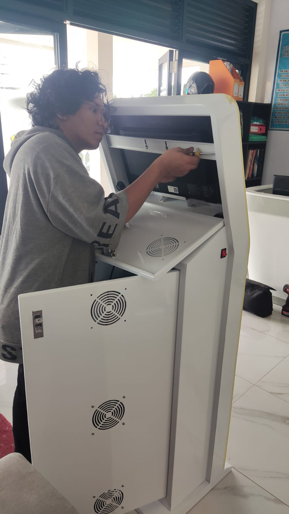
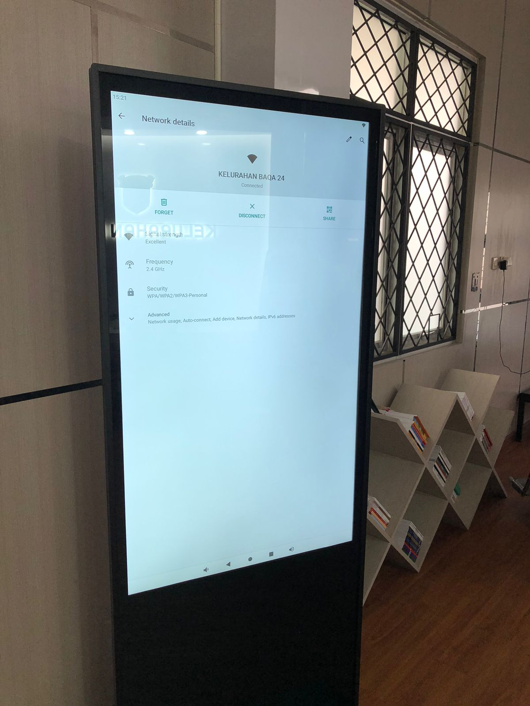
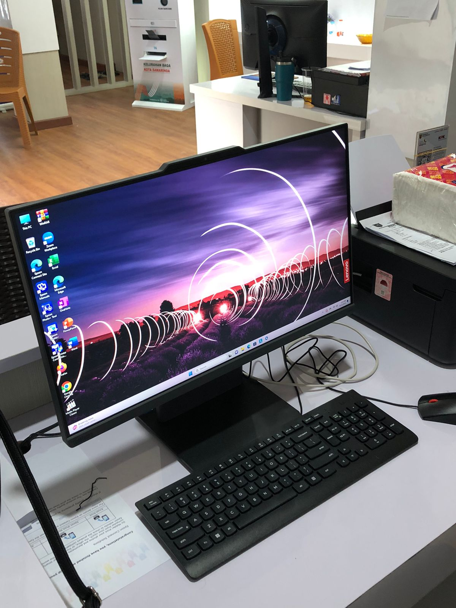
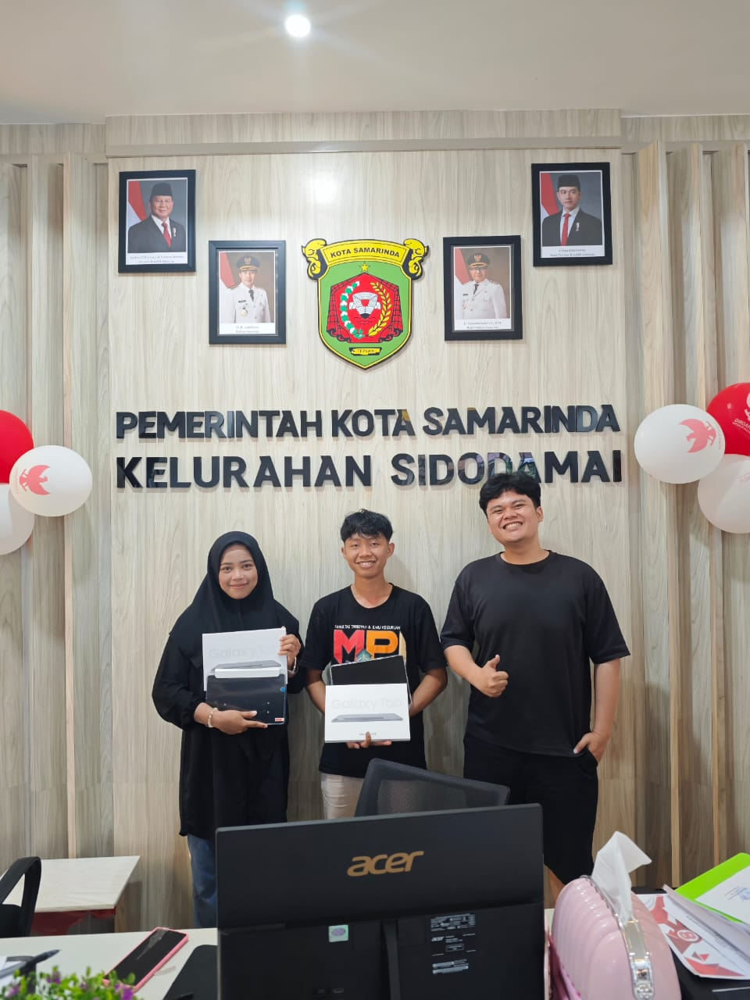
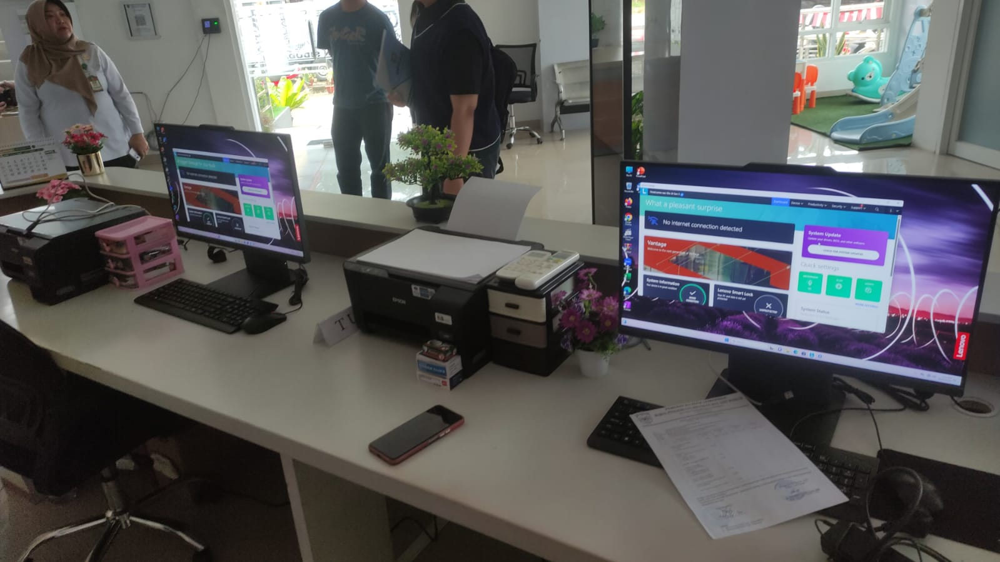
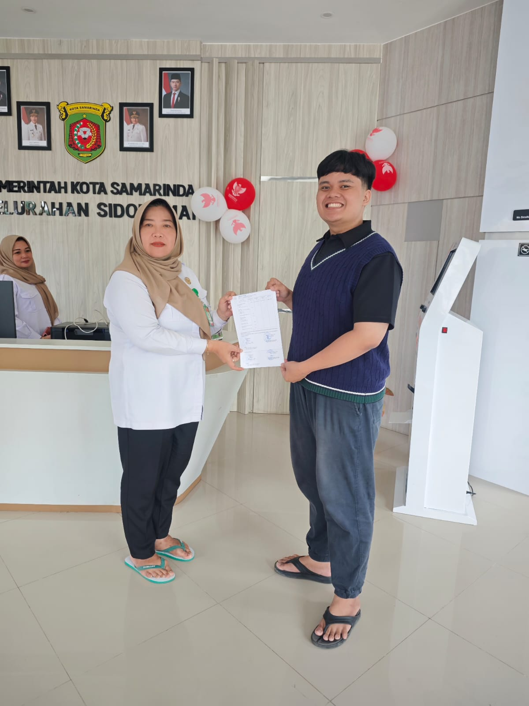

Custom Kios-K
The independent terminal with the special enclosures to place at the public service point.
Project Article < Hardware & public service
Provides a public service device - custom Kios-K, PC and tablet - to support operational needs in Samarinda's absolution.

Implementation context
Implementation includes the device needs for the service point: custom Kios-K as an independent terminal, as well as PC and tablet to support the personnel activity in absolution. This documentation focuses on the procrastination and readiness stage of field devices.
Documented scope
The independent terminal with the special enclosures to place at the public service point.
A work device for administrative needs and operational services officers.
Mobile devices for impound and services that require mobility.
Delivery, installation prep, and device adjustment before commiting.
Field documentation








Need devices and systems?
Altora can help design the needs of the device, the applications, the integration and the implementation flow.